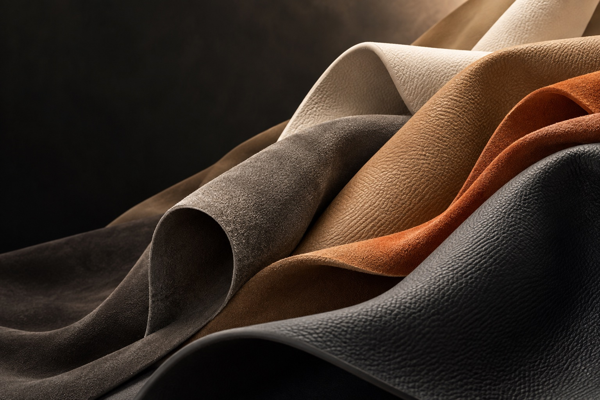

DAEYOM · MICROFIBER MATERIALS
Fine fibers.
New possibilities.
Small details. Greater possibilities.
Exploring waterborne
microfiber materials for everyday life.
WATERBORNE ／ MICROFIBER ／ POSSIBILITIES
Progress starts
with every fiber.
Explore the project
A finer touch.
A world of inspiration.
Based in Lichuan County, Fuzhou, Jiangxi, DaeyoM is developing a waterborne microfiber synthetic leather project that brings together fiber substrates and waterborne polyurethane processing.
We explore the connection between materials and design, with potential applications in footwear, bags, automotive interiors and home furnishings. Together with our partners, we look forward to discovering what microfiber materials can become.
Planned annual capacity
Planned project investment
Project location
Figures reflect the project plan filed with the Lichuan County government, not current operating capacity.View source ↗
Texture to feel.
Possibilities to shape.
Built on fibers. Shaped by process.
Exploring the balance of
texture, feel and function.
Waterborne microfiber
Waterborne microfiber synthetic leather
The planned process forms a needle-punched nonwoven substrate from sea-island fibers, then combines waterborne polyurethane impregnation with finishing to explore a range of microfiber synthetic leather textures.
Discover applicationsFrom fiber to material
Process outlined in the project filing
-
01
Web formation
Sea-island fibers · Needle-punched nonwovens
-
02
Waterborne impregnation
Waterborne polyurethane · Drying
-
03
Finishing
Buffing · Splitting · Finishing
-
04
Inspection
Final material inspection
One material.
Many possibilities.
Connecting design inspiration with everyday life.
Discover
potential applications for microfiber materials.
New possibilities.
Every step of the way.
From casual to sport-inspired styles, we explore the feel, appearance and processing needs of upper and lining materials, opening up new ideas for footwear design.
Discuss your applicationCarry the everyday.
Make room for inspiration.
Texture and color can become part of a designer’s language. We explore material possibilities for handbags, backpacks and small accessories.
Discuss your applicationA fresh perspective
on the journey ahead.
Exploring seat upholstery, door panels and interior trim, we consider how appearance and touch can work with spatial design to shape the travel experience.
Discuss your applicationBring a finer touch
to everyday living.
From home upholstery to clothing and accessories, we explore how soft textures and varied styles can add a new dimension to everyday life.
Discuss your applicationThese are potential application areas. Specifications, performance and suitability must be confirmed through actual samples and testing.
Rooted in Jiangxi.
Looking to the future.
A waterborne microfiber synthetic leather project.
The next
chapter in DaeyoM’s materials journey.
Jiangxi Dayue Microfiber New Materials Co., Ltd.
Waterborne microfiber synthetic leather project
2026.03 — 2027.03
Dates reflect the publicly filed plan. Actual construction and production milestones are subject to future company updates.
Let’s shape
what comes next.
Material applications · Product development · Industry partnerships
Lichuan, Fuzhou, Jiangxi, China
Intersection of Yuanqu South Avenue and Pinggao 3rd Road,
Industrial Park
- Phone
- —
- —
- —